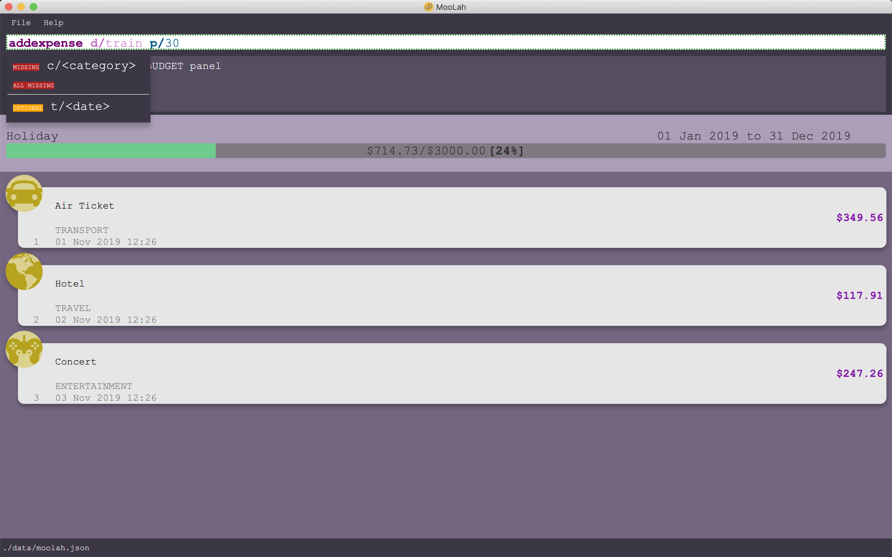

By: Team SE-EDU Since: Jun 2016 Licence: MIT
- 1. Introduction
- 2. Quick Start
- 3. Features
- 3.1. Viewing help :
help - 3.2. Basic Expense/Event-Related Commands
- 3.3. Budgeting-Related Commands
- 3.4. (Coming in v2.0)Prediction :
predict - 3.5. Creating an alias for your favourite commands :
alias - 3.6. Saving the data
- 3.7. Viewing Statistics
- 3.8. Exiting the program :
exit - 3.9. Saving the data
- 3.10. Encrypting data files
[coming in v2.0] - 3.11. Email notification
[coming in v2.0] - 3.12. Input expenses by scanning a receipt
[coming in v2.0]
- 3.1. Viewing help :
- 4. FAQ
- 5. Command Summary
1. Introduction
MooLah is a hassle-free expense tracker for those who prefer to use a desktop app for tracking expenses. More importantly, MooLah is optimized for those who prefer to work with a Command Line Interface (CLI) while still having the benefits of a Graphical User Interface (GUI). MooLah supports user-friendly input format and aliases that greatly improves the efficiency of CLI operations. It also supports recurring expenses and includes menus from canteens of National University of Singapore for students to track their everyday food expenses in a second. If you can type fast, MooLah can get your expense management tasks done much faster than traditional GUI expense trackers. Interested? Jump to the Section 2, “Quick Start” to get started. Enjoy!
2. Quick Start
-
Ensure you have Java
11or above installed in your Computer. -
Download the latest
moolah_v1.2.1.jarhere. -
Copy the file to the folder you want to use as the home folder for
MooLah. -
Double-click the file to start the app. The GUI should appear in a few seconds.
 -
Type the command in the command box and press Enter to execute it.
e.g. typinghelpand pressing Enter will open the help window. -
Some example commands you can try:
-
list: lists all expenses -
addd/Chicken Rice p/2.50 c/Food t/25-10: adds an expense namedChicken Riceto the expense tracker. -
delete3: deletes the 3rd expense shown in the current list -
exit: exits the app
-
-
Refer to Section 3, “Features” for details of each command.
3. Features
Command Format
-
Words in UPPER_CASE are the parameters to be supplied by the user e.g. in
add p/PRICE,PRICEis a parameter which can be used asadd p/2.50 -
Items in square brackets are optional e.g `d/DESCRIPTION p/PRICE c/CATEGORY [t/DATE] can be used as 'add d/Chicken Rice p/2.50 c/Food' or 'add d/Chicken Rice p/2.50 c/Food t/25-01'
-
Parameters can be in any order e.g.
add p/PRICE d/DESCRIPTION,add d/DESCRIPTION p/PRICEare both acceptable.
3.1. Viewing help : help
Format: help
3.2. Basic Expense/Event-Related Commands
3.2.1. Adding an expense/event: add
Add an expense/event to the expense tracker. If the timestamp denotes a future date, an event is added. If not, an expense is added instead.
Upon launch, Moolah will remind the user of upcoming events (7 days or below), and also ask users whether they wish to automatically add expenses corresponding to transpired events.
Format: add d/DESCRIPTION p/PRICE c/CATEGORY [t/TIMESTAMP]
-
An expense must have exactly 1 category
-
If a time is not specified, an expense will be added with its date being the current system date.
Examples:
-
add d/Brian birthday p/40 c/Gifts t/31-12 -
add d/Buffet p/250 c/Food
(Coming in v1.4) Using relative time/date input: yesterday
The user can specify an expense/event’s time using relative dates and times.
Example:
If the current date is 12 Sep 2013
Input: add d/Chicken Rice p/2.50 t/Yesterday Noon
Result: adds an expense of 2.50 at 11 Sep 2013, 12pm
3.2.2. Listing all expenses : list
Shows a list of all expenses in the expense tracker.
Format: list
3.2.3. (Coming in v1.4) Listing all events : events
Lists all events that you have inputted.
Format: events
Example:
eventsResult:
You have these important dates coming up!
Brian’s birthday: 04/06/2020
Mum’s birthday: 06/06/20203.2.4. Updating an expense/event : edit
Edits an existing expense/event in the expense tracker.
Format: edit INDEX [p/PRICE] [d/DESCRIPTION] [t/time] [c/CATEGORY]…
Example:
edit 2 p/3.50
Updates the price of the 2nd expense in the current list to 3.50.
3.2.5. Locating expenses/events by name: find
Finds expenses/events whose description contain any of the given keywords.
Format: find KEYWORD [MORE_KEYWORDS]
Examples:
-
find riceReturnschicken riceandduck rice -
find chicken taxi schoolfeeReturns any expense having description containingchicken,taxi, orschoolfee
3.2.6. Deleting an expense/event : delete
Deletes the specified expense/event from the current list shown in the expense tracker.
Format: delete INDEX
Examples:
list
delete 2Deletes the 2nd expense in the list of expenses, shown by list.
events
delete 2Deletes the 2nd event in the list of events, shown by events.
list
find chicken
delete 1Deletes the 1st expense in the results of the find command.
3.2.8. Undo the previous command : undo
User can undo the previous command. Only commands that modify the data, e.g. add edit delete clear,
can be undone.
Format: undo
Example:
delete 5
undoResult: Expense no. 5 will be undone, re-added to the data.
3.2.9. Redo the command that was undone : redo
User can redo the command they have undone.
Format: redo
Example:
delete 5
undo
redoResult: Expense no. 5 will now be deleted.
3.3. Budgeting-Related Commands
3.3.1. Creating new budgets : budget
Creates a new expense budget.
Format: budget d/BUDGET_NAME p/BUDGET_AMOUNT sd/BUDGET_START_DATE pr/BUDGET_PERIOD
E.g.
budget d/school p/300 sd/01-10-2019 pr/month
This will create a new budget “school” that is set to $300 per month, starting from 1st October 2019.
3.3.2. Switch current budget : switch
Switches currently active budget (i.e. primary budget) to another budget.
Format: switch d/BUDGET_NAME
E.g.
switch d/outside school
3.4. (Coming in v2.0)Prediction : predict
User can get a rough estimation of next month’s total expense based on extrapolation from this month’s expenditure. The prediction will take into account important dates that require extra spending in next month.
Format: predict
Result:
We predict your next month’s total expenditure to be …
3.5. Creating an alias for your favourite commands : alias
Assign a full paramaterized input to an alias.
Format: alias a/ALIAS_NAME c/COMMAND_WITH_PARAMETERS
E.g.
alias a/chicken rice c/ add d/ Chicken Rice p/2.50 c/Food
Result creates an alias “chicken rice” for the command which adds an expense of 2.50 under the Food category with a
description of “Chicken Rice” at the current system time.
-
Note: all white spaces characters will be removed from alias names
-
Note: aliases with names of official commands cannot be made
-
Note: using the same name for an alias will overwrite the existing alias if it exists
3.6. Saving the data
Expense tracker data are saved in the hard disk automatically after any command that changes the data. There is no need to save manually.
3.7. Viewing Statistics
3.7.1. Summary : stats
Produces statistics regarding the user’s expenses.
The statistics is in the form of a pie chart, where every piece represents the combined expenditure of all expenses under the category, taken as a percentage of the total expenditure in the budget the command was called.
Format: stats [sd/START_DATE] [ed/END_DATE]
-
Date formats accepted include
DD-MM-YYYYorDD-MM, where the year will be taken as the current year if it is not specified. -
START_DATEwill be checked to be earlier thanEND_DATE -
If
START_DATEis specified butEND_DATEis empty, statistics is calculated from one month afterSTART_DATE -
If
START_DATEis empty butEND_DATEis specified, statistics is calculated from one month beforeSTART_DATE -
If both
START_DATEandEND_DATEare empty, statistics is calculated from one month before the current date.
Example:
stats
stats sd/12-12-2018
stats sd/11-11-2018 ed/12-12-2018
3.7.2. Compare : statscompare
Produces and displays statistics regarding the user’s finance for 2 time periods.
The statistics include all categories of items, the number of entries and the total expenditure of all expenses under
the category.
The number under each cell represents the difference using second period – first period.
Format: statscompare sd1/START_DATE_1 sd2/END_DATE pr/PERIOD
-
Date formats accepted include
DD-MM-YYYYorDD-MM, where the year will be taken as the current year if it is not specified. -
PERIODtakes in either of the following keywords: week, month, year
NOTE[Work in progress]:
- day is ideally recognised as a keyword to PERIOD
-
If day is given as a keyword under
PERIOD, statistics will be calculated from 12:00am of the day till 11:59pm of the same day
Examples:
statscompare sd1/01-01-2019 sd2/01-02-2019 pr/month
3.8. Exiting the program : exit
Exits the program.
Format: exit
3.9. Saving the data
MooLah data are saved in the hard disk automatically after any command that changes the data.
There is no need to save manually.
4. FAQ
Q: How do I transfer my data to another Computer?
A: Install the app in the other computer and overwrite the empty data file it creates with the file that contains
the data of your previous MooLah folder.
5. Command Summary
-
Add an expense
add d/DESCRIPTION p/PRICE [t/time] [c/CATEGORY]…
e.g.add d/Chicken Rice p/2.50 t/15-09-2019 1230 c/Food -
Clear all expenses :
clear -
Compare statistics :
statscompare start1/START_DATE_1 end1/END_DATE start2/START_DATE_2 end2/END_DATE_2
e.g.statscompare sd1/01-01-2019 sd2/01-02-2019 pr/week -
Create alias :
alias a/ALIAS_NAME c/COMMAND_WITH_PARAMETERS
e.g.alias a/chicken rice c/ add d/ Chicken Rice p/2.50 c/Food -
Create new budget :
budget d/BUDGET_NAME p/BUDGET_AMOUNT sd/BUDGET_START_DATE pr/BUDGET_PERIOD
e.g.budget d/school p/300 sd/01-10-2019 pr/month -
Currency conversion :
convert -
Delete an expense :
delete INDEX
e.g.delete 3 -
Edit an expense :
edit INDEX [p/PRICE] [d/DESCRIPTION] [t/time] [c/CATEGORY]…
e.g.edit 2 p/3.50 -
Exit the app :
exit -
Find an expense :
find KEYWORD [MORE_KEYWORDS]
e.g.find rice -
List all expenses :
list -
List all reminders :
reminders -
Help :
help -
Prediction :
predict -
Record important date :
remind EVENT DATE [n DAYS]
e.g.remind Brian’s birthday 04/06/2020 14 DAYS -
Redo :
redo -
Switch budget :
switch d/BUDGET_NAME
e.g.switch d/outside school -
Undo :
undo -
View statistics :
stats [start/START_DATE] [end/END_DATE]
e.g.stats sd/11-11-2018 ed/12-12-2018